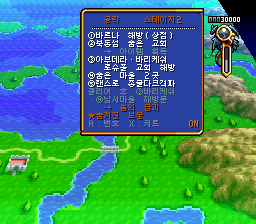
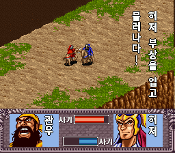

한글화한 작품

v1.02026-10-30 배포
성검전설3 (치트)
스퀘어 1995 · 액션 RPG. 2017년 한글판에 루크 최대·HP/MP 유지·경험치 4배 치트 추가

v1.32026-10-31 배포
전설의 오우거 배틀 (치트·공략)
퀘스트 1993 · 시뮬레이션 RPG. 한마루 한글판에 치트 메뉴와 스테이지별 공략·지도 번호 표시 추가

v1.72026-10-26 배포
크로노 트리거+ (CT+)
스퀘어 1995 RPG의 팬 개조판 Chrono Trigger+ 한글화. 대사·메뉴·전투 한글화 + 치트 메뉴

v2.7.22026-10-27 배포
천지를 먹다 확장판 (삼국지군웅전)
한글화 + 능력치·전투·내정 개편, 새 시나리오 「진삼국」과 추가 장수 50명

v1.3.22026-10-26 배포
천지를 먹다 (삼국지군웅전)
캡콤 1995 · 삼국지 시뮬레이션. 대사·메뉴·전투 한글화 + 새 시나리오 「유비의 꿈」
다음 작품 준비 중
패치 적용 방법
각 작품 페이지에 적힌 원본 롬(헤더 없음, SHA-1 확인)에 IPS 패치를 적용합니다. 웹에서는 RomPatcher.js, PC에서는 Floating IPS를 쓰면 됩니다.
요청·제보
한글화했으면 하는 게임이나 버그, 개선 의견이 있으면 요청·제보 페이지로 보내 주세요.